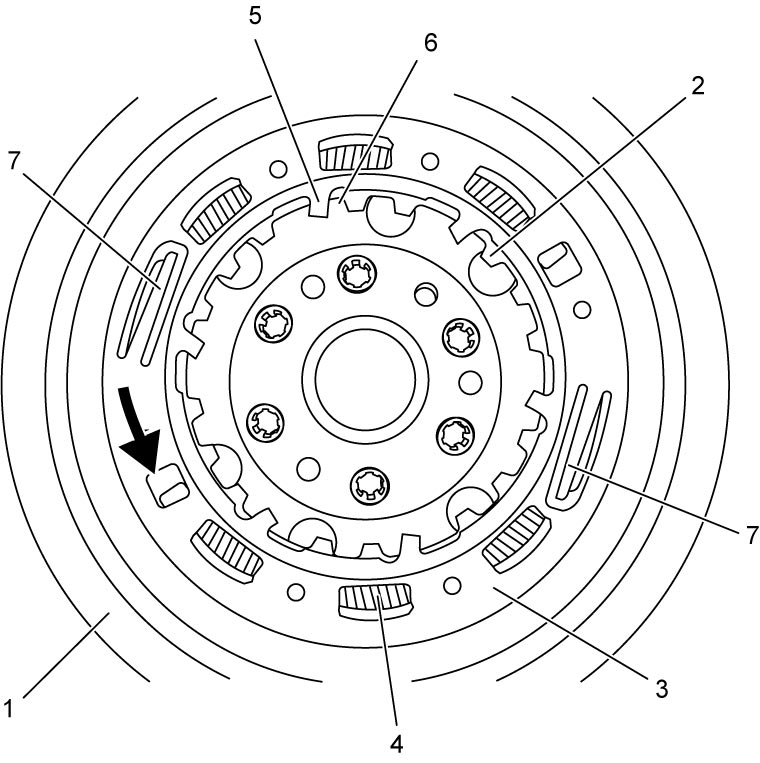

5F
| Twin Clutch System Flywheel Description |
Flywheel (1) mounted on the crankshaft mainly consists of the flywheel, inner plate (2) incorporated in the flywheel, outer plate (3) floating on the inner plate and torsional springs (4) retained by the outer plate as a mechanism for engagement with the twin clutch system unit. Teeth on the inner plate engage with outer spline on odd gear clutch assembly of the twin clutch system unit and the outer plate moves on the inner plate pushed by the torsional springs to absorb the backlash and rotational shock pushing the outer spline with claws (5). When the clutch is disconnected from the flywheel, tooth-to-claw clearance (6) is reduced at 6 positions. Therefore, when engaging the twin clutch system unit with the engine, it is necessary to expand the tooth-to-claw clearance moving the flywheel outer plate in arrow direction and fix the expanded teeth width with check plates (7) until the engagement is completed. After the engagement, the fixed outer plate is automatically released when the engine is started and resumes the torsional function.

 "Expand image")